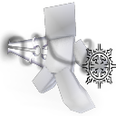

V4.9 · Données officielles du mod
Compétences & Sorts
Explore les techniques de Weapons of Miracles : esquives, gardes, passifs, déplacements, identités et sorts propres aux Miracles.
0 / 53 maîtrisées53 compétences officielles · 6 catégories · Forge 1.20.1

53 fiches affichéesLes valeurs dynamiques dépendent de la configuration et des enchantements.